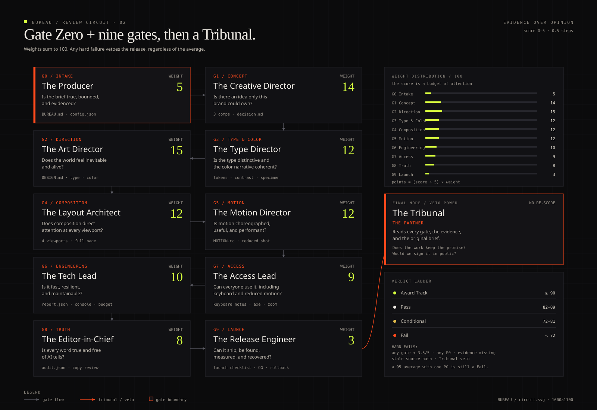

Open-source agent skill · v{{VERSION}} · MIT
Bureau
The autonomous digital design bureau.
Concept, art direction, motion, WebGL, Figma, Playwright evidence, accessibility, performance, and a review circuit that can say no. Installs into Claude, Codex, Antigravity and Hermes.
Built for work that cannot look generic.
No fake metrics. No template reflex. No average.
The average is the enemy.
Models are trained on the internet's mean. Without direction, that mean becomes the design. BUREAU replaces the reflex with a decision.
Slop is not "made by AI". It is the same hero, the same gradient, the same three cards, the same vague promise — reproduced without a point of view.
The fix is not more decoration. It is a specific subject, a real constraint, a named signature, and a review that refuses to average a hard failure away.
- BS-K01
Purple-to-blue gradient as the brand→ Anchor the palette in a material, a place, a memory. - BS-C01
Centered pill + H1 + subtitle + two buttons→ Commit to object, stage, split argument, index or live proof. - BS-M01
Fade-up on every section→ One entrance sequence, then quiet. - BS-W03
Unsourced uptime and customer counts.→ Source and date, or remove the claim. - BS-I04
A fake dashboard with the same bar chart→ Build the real view, or a diagram that explains. - BS-T01
The default AI font pairing as the entire identity→ Give display type its own voice.
Ten gates. One Tribunal.
Every gate has a persona, a weight, hard failures and required evidence. A 95 average with one P0 is still a Fail.

A bureau, not a prompt pack.
Twelve capabilities that normally require a creative director, an art director, a motion designer, a creative technologist and an editor.
Technological proof / moving image
A page is an argument, not a container.
Ambient loop generated for this repository. Muted, inline and pausable. The same discipline applies to a product film, a shader or a scroll scene.
Three worlds. One method.
Self-contained templates. Open them, inspect the source, break them, rebuild them with your own subject.
Install once. Use everywhere.
The same skill folder works across four hosts. Preview with a dry run, then restart the agent and call /bureau.
Requires Node 20+. Playwright is optional and degrades to manual screenshots. Figma MCP is optional and degrades to exported variables.
Windows: use install.ps1. Uninstall removes only folders with the BUREAU marker.
git clone https://github.com/acf1210/bureau.git
cd bureau
bash installers/install.sh --agent claude --scope usergit clone https://github.com/acf1210/bureau.git
cd bureau
bash installers/install.sh --agent codex --scope usergit clone https://github.com/acf1210/bureau.git
cd bureau
bash installers/install.sh --agent antigravity --scope usergit clone https://github.com/acf1210/bureau.git
cd bureau
bash installers/install.sh --agent hermes --scope userOr install everywhere: bash installers/install.sh --agent all --scope user --dry-run
Read it in your language.
Nine pages per locale: overview, quickstart, architecture, workflow, circuit, commands, anti-slop, visual language and install.